Daniel Vishnevsky
About
Astral Surge is a top-down 2D speedrunning game focused on collecting all coins in time while evading traps and enemies. Features a level editor and endless mode.
Features
This game is basically its own game engine. It loads all tiles, levels and even endless mode layouts from JSON. It's really configurable. You can write your own levels using the level editor.
The gameplay is primitive but it's pretty fun. You collect coins and reach the finish line while evading traps and enemies. There's a plethora of different enemy and turret types, all configurable in JSON. If the default levels and user-made levels aren't enough, then you can challenge yourself in endless mode.
The game also contains configurable dynamic lighting that can look amazing if done right. It can both go through walls and not. This can also create challenging levels where you have to be careful, like the endless cave theme.
Development
I tried to port my first game - Abyss Ascendant - to a graphical window. In the end, it turned into a wholly different game. This game is more focused on the gameplay, whereas AA is more focused on the story-telling aspect.
Just like Pong, I originally used SFML but quickly switched to my library CX. I constantly was working on both of them and this project really helped shape CX for real project usage. Whenever I didn't like something about the API, whether SFML or CX, I went and fixed it. This back and forth from game to library is something special.
I documented my whole journey on my old Youtube channel post the switch to CX. At first, I kept the code closed-source. But now it is open-source on Github.
Also during the making of this game I learned to do pixel art. Before I wasn't able to draw anything that well but I learned everything from just doing it. I'm pretty proud with the art I've done especially the newer 64x64 industrial art.
Gallery
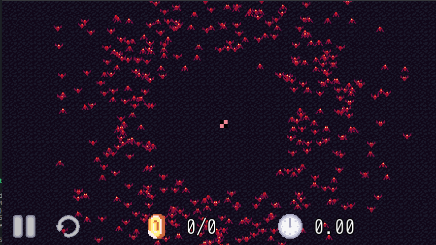
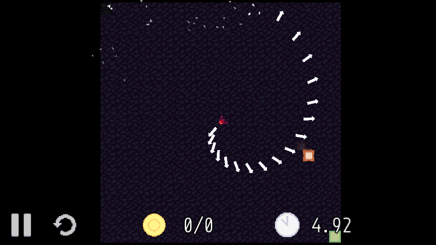
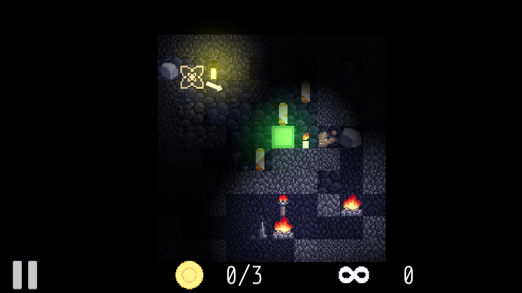
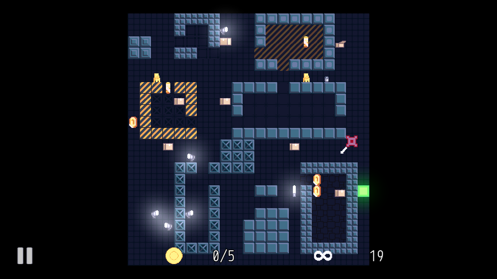
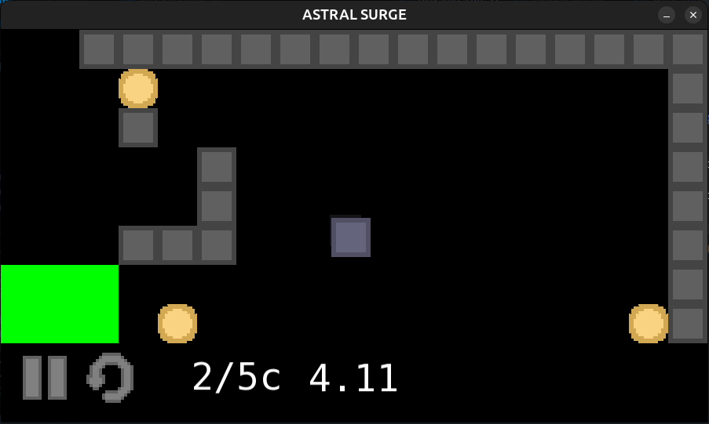
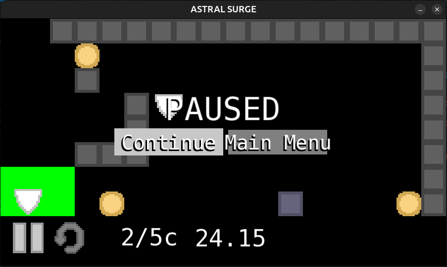
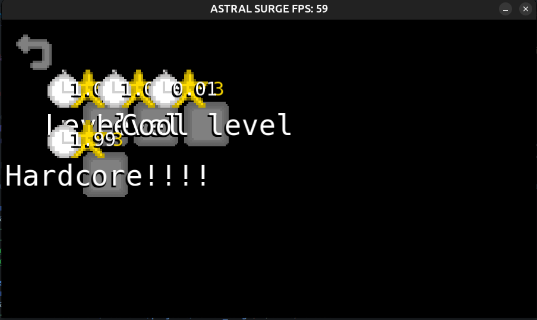
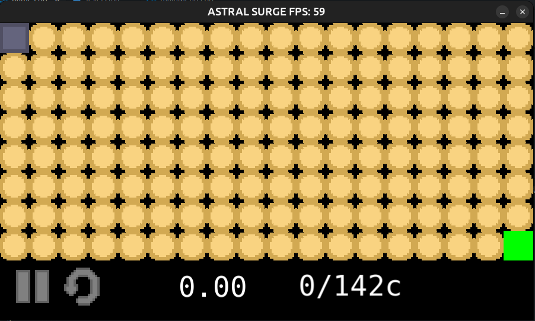
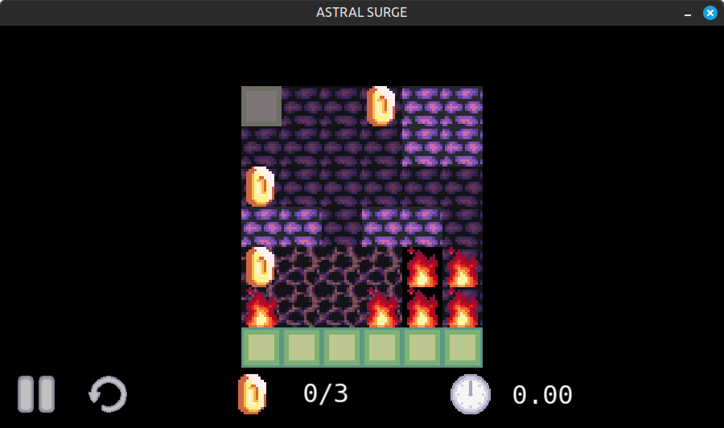
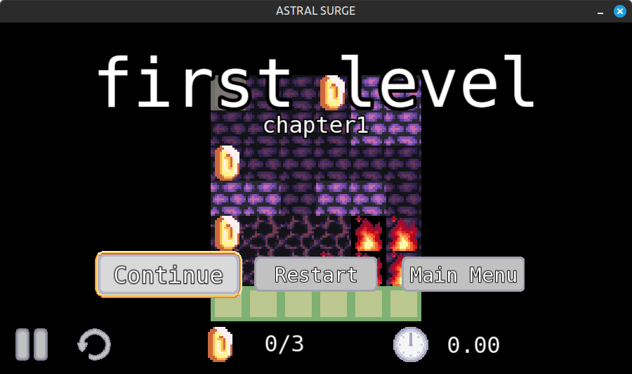
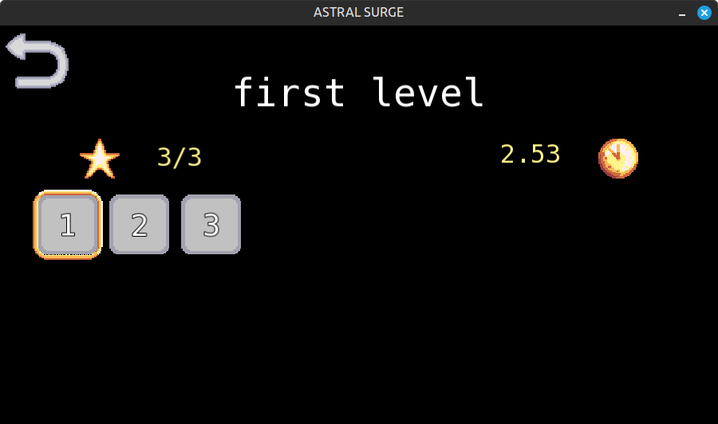
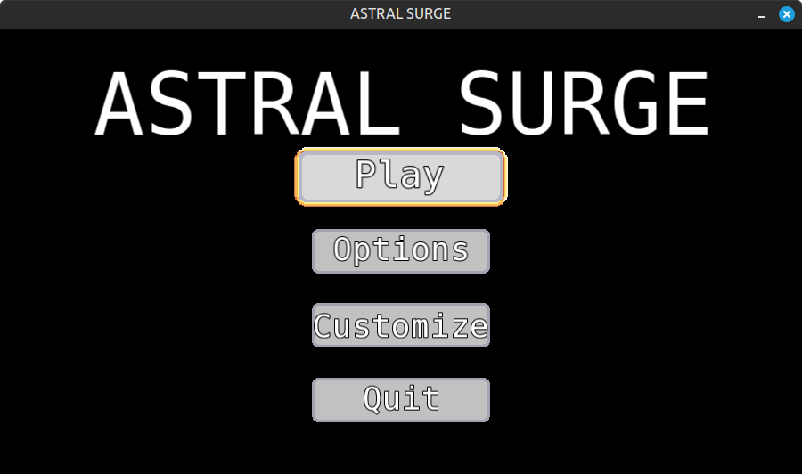
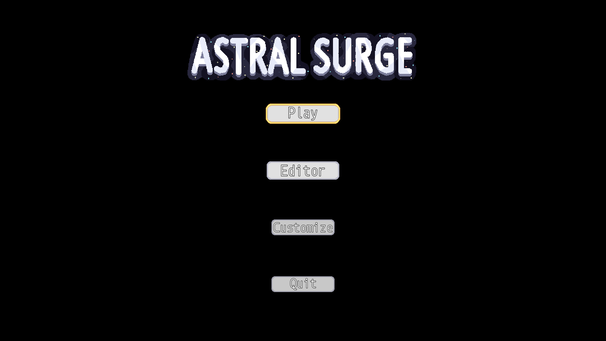
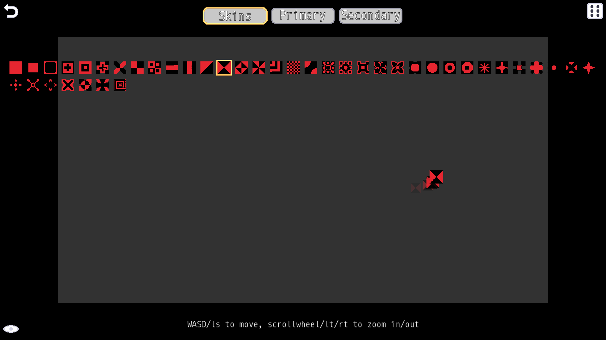
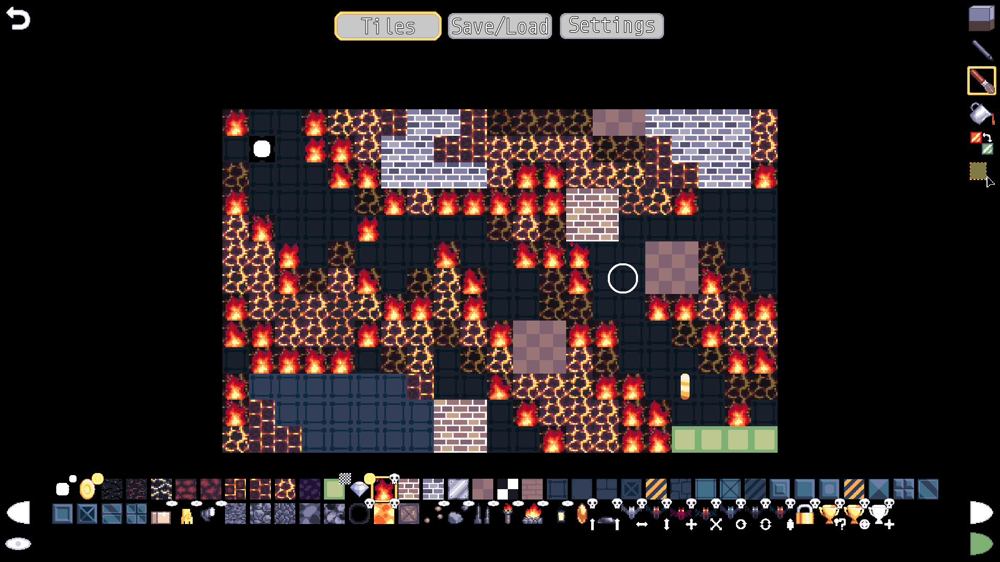
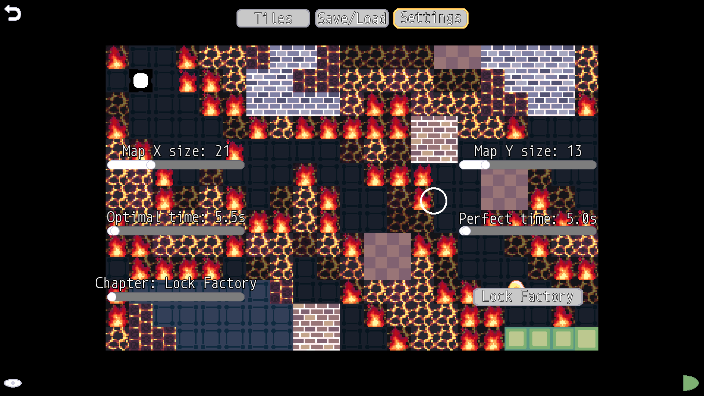
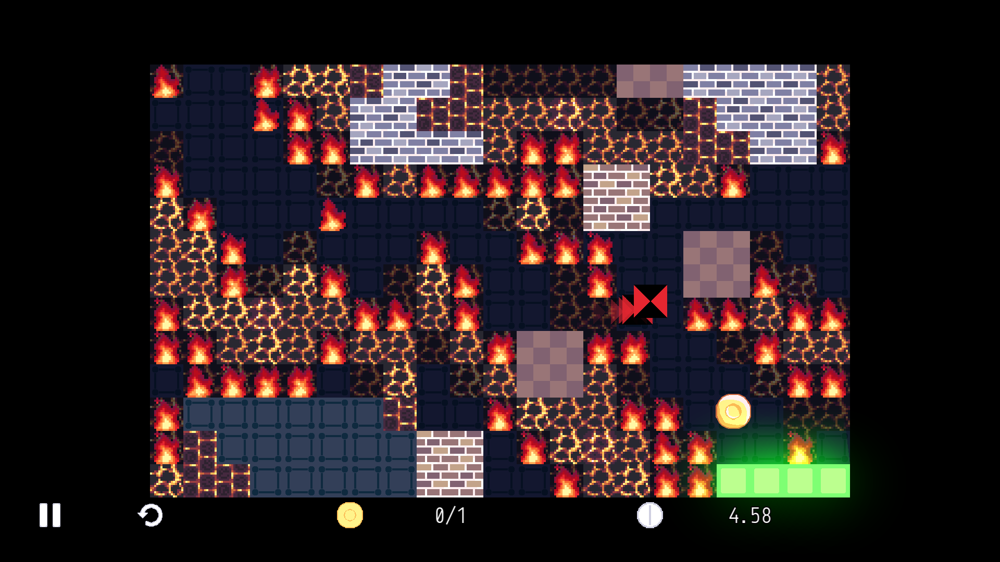
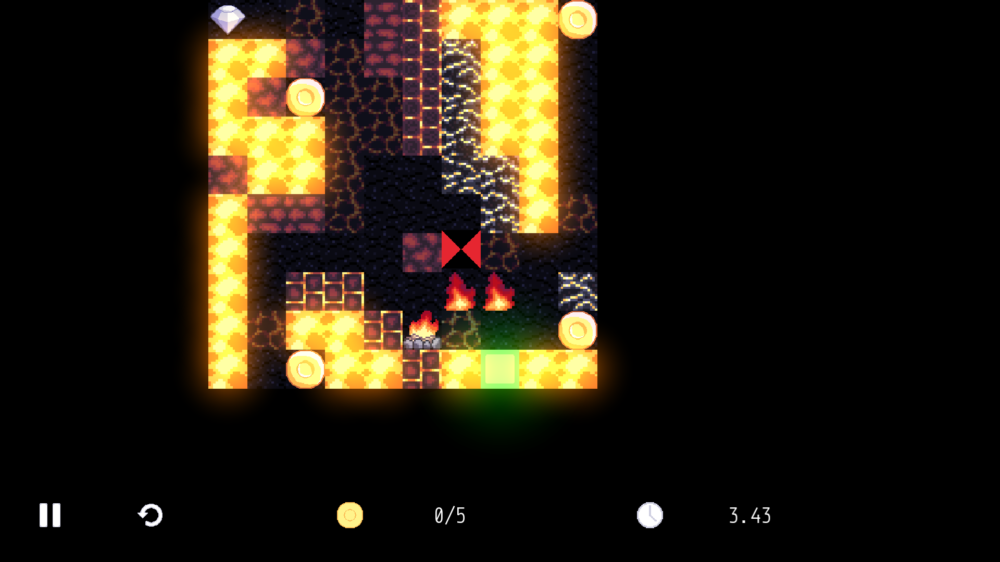
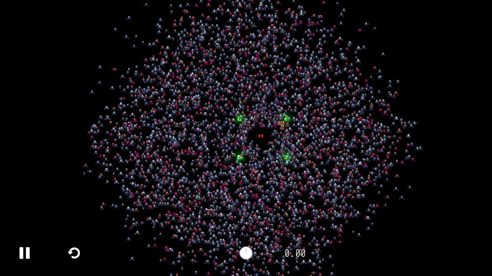
^^ hi